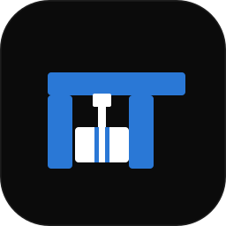
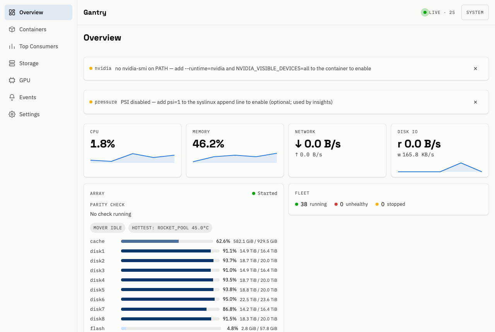
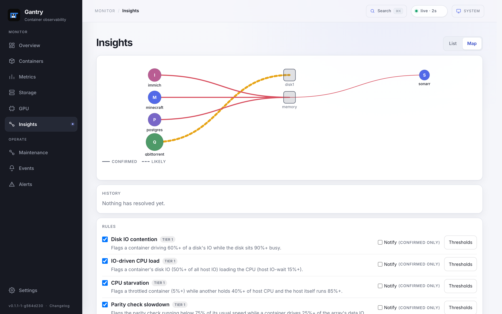

Every container, accounted for.
Live CPU, memory, network, disk IO, and GPU usage. Find the heavy hitters, compare containers, and follow their history down to the logs.

GantryCONTAINER OBSERVABILITY, BUILT FOR UNRAID
Know what’s running. See what’s slowing it down.
Containers, storage, and the connections between them — all in one place.
Self-hosted · Open source · One Docker container

One container.
No agents to pair.
Your server. Your data.
No cloud account.
Beyond the numbers.
Understand the slowdown.
01 / THE WHOLE PICTURE
A busy server has a lot to tell you. Gantry connects container activity to what’s happening on the host.
Live CPU, memory, network, disk IO, and GPU usage. Find the heavy hitters, compare containers, and follow their history down to the logs.
Array and pool health, parity progress, drive temperatures, and errors. See which containers share a disk and where the pressure is building.
See which containers use each GPU engine. Intel and AMD work out of the box; optional Nvidia support adds utilization and VRAM tracking.
Send alerts to Unraid’s notification center or a webhook. Separate trip and clear thresholds keep noise down; matching insights help explain what happened.
02 / FOLLOW THE CONNECTIONS
When one container is likely slowing another, Gantry explains the connection in plain language — with a confidence level and the numbers behind it.

03 / AT HOME ON YOUR SERVER
Gantry runs as one container and keeps its history in a local SQLite database. Create a username and password on first launch, and you’re in.
Monitoring is read-only. Optional Docker housekeeping lets you remove unused images and stopped containers after confirmation. Set GANTRY_READ_ONLY=1 to disable cleanup.
04 / GET STARTED
Available in Unraid Community Applications.
The template fills in the mounts and settings. Your dashboard is ready when you are.
Use the Docker command, then open http://<your-unraid-ip>:8380/.
docker run -d \
--name=gantry \
--label net.unraid.docker.icon=https://raw.githubusercontent.com/smidley/gantry/main/template/gantry-icon.png \
--pid=host \
--cap-add=SYS_PTRACE \
-p 8380:8380 \
-v /var/run/docker.sock:/var/run/docker.sock:ro \
-v /sys:/host/sys:ro \
-v /var/local/emhttp:/unraid:ro \
-v /tmp/notifications:/notify:rw \
-v /var/lib/docker/unraid-update-status.json:/updates/unraid-update-status.json:ro \
-v /mnt/user/appdata/gantry:/config:rw \
--restart=unless-stopped \
ghcr.io/smidley/gantry:latestThe update-status mount is optional. If that file is absent on your host, omit its line. Mounts & requirements ↗
{kind=link}